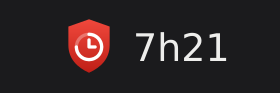
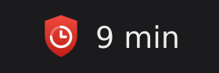
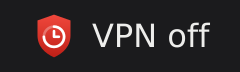
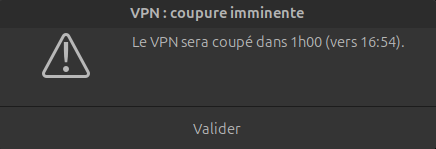

Aperçu
Le logo et un texte en haut à droite de l'écran, mis à jour chaque minute.




Comment ça marche
Aucun réglage : il se lance tout seul et se fait oublier.
- Chaque minute, il lit la durée de connexion que FortiClient affiche. La fin de session est donc exacte, même s'il démarre en cours de route.
- Il affiche le temps restant avant la coupure (session de 8 h) dans la barre supérieure.
- Il ouvre une alerte quand il reste 1 h, puis 15 min.
Prérequis
- Ubuntu 22.04 ou plus récent, avec un bureau graphique (GNOME testé).
- FortiClient installé dans
/opt/forticlient/(testé avec la 7.4.3). - L'extension GNOME « AppIndicator » (activée par défaut sur Ubuntu) pour l'icône de la barre.